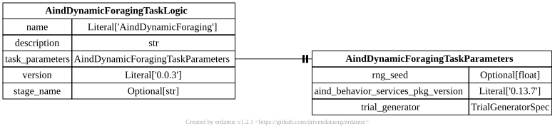
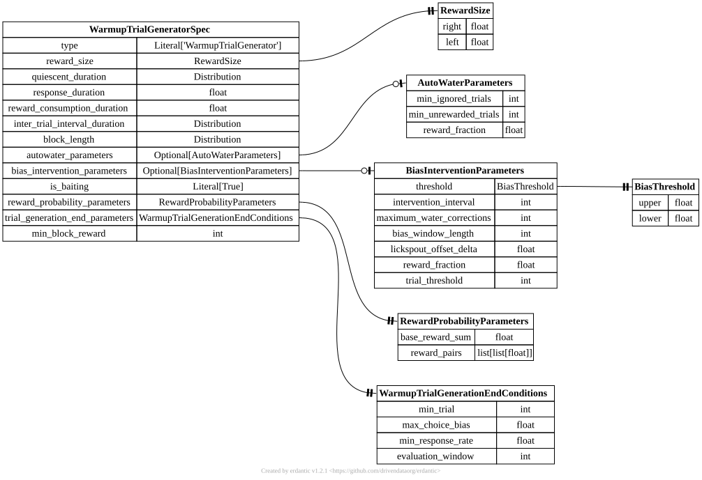
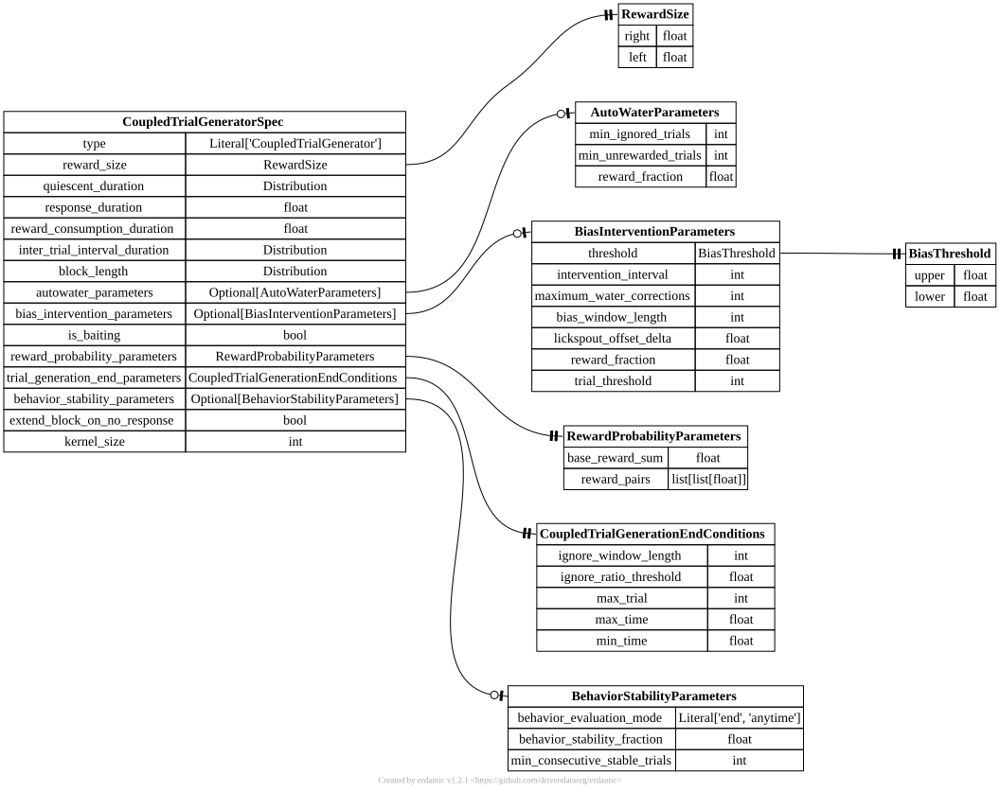
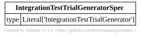
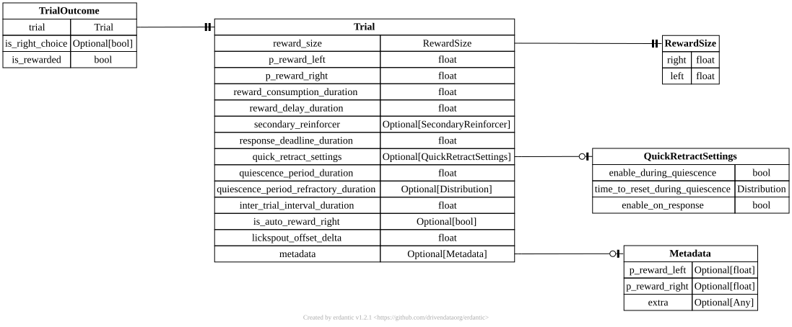

api.task_logic¶
Task¶
{kind=link}

Trial Generators¶
Warmup¶
{kind=link}

Coupled¶
{kind=link}

Composite¶

Integration Test¶
{kind=link}

Trial¶
{kind=link}

- class aind_behavior_dynamic_foraging.task_logic.AindDynamicForagingTaskLogic(*, name: Literal['AindDynamicForaging'] = 'AindDynamicForaging', description: str = '', task_parameters: AindDynamicForagingTaskParameters, version: Literal['0.0.2-rc26'] = '0.0.2-rc26', stage_name: str | None = None)[source]¶
Bases:
TaskMain task logic model for the AIND Dynamic Foraging task.
This is the top-level class that encapsulates the complete task logic specification for the dynamic foraging behavioral experiment. It includes all task parameters, environment specifications, and control settings.
- model_config = {'extra': 'forbid', 'str_strip_whitespace': True, 'strict': True, 'validate_assignment': True, 'validate_default': True}[source]¶
Configuration for the model, should be a dictionary conforming to [ConfigDict][pydantic.config.ConfigDict].
- task_parameters: AindDynamicForagingTaskParameters[source]¶
- class aind_behavior_dynamic_foraging.task_logic.AindDynamicForagingTaskParameters(*, rng_seed: float | None = None, aind_behavior_services_pkg_version: Annotated[Literal['0.13.5'], _PydanticGeneralMetadata(pattern='^(0|[1-9]\\d*)\\.(0|[1-9]\\d*)\\.(0|[1-9]\\d*)(?:-((?:0|[1-9]\\d*|\\d*[a-zA-Z-][0-9a-zA-Z-]*)(?:\\.(?:0|[1-9]\\d*|\\d*[a-zA-Z-][0-9a-zA-Z-]*))*))?(?:\\+([0-9a-zA-Z-]+(?:\\.[0-9a-zA-Z-]+)*))?$')] = '0.13.5', reward_size: RewardSize = RewardSize(right_value_volume=3.0, left_value_volume=3.0), trial_generator: TrialGeneratorSpec = IntegrationTestTrialGeneratorSpec(type='IntegrationTestTrialGenerator'), **extra_data: Any)[source]¶
Bases:
TaskParametersComplete parameter specification for the AIND Dynamic Foraging task.
This class contains all configurable parameters for the Dynamic Foraging task, including environment structure, task mode settings, operation control, and numerical updaters for dynamic parameter modification.
- model_config = {'extra': 'allow', 'str_strip_whitespace': True, 'strict': True, 'validate_assignment': True, 'validate_default': True}[source]¶
Configuration for the model, should be a dictionary conforming to [ConfigDict][pydantic.config.ConfigDict].
- reward_size: RewardSize[source]¶
- class aind_behavior_dynamic_foraging.task_logic.RewardSize(*, right_value_volume: float, left_value_volume: float)[source]¶
Bases:
BaseModel
- class aind_behavior_dynamic_foraging.task_logic.trial_models.AuditorySecondaryReinforcer(*, type: Literal['Auditory'] = 'Auditory')[source]¶
Bases:
BaseModelRepresents an auditory secondary reinforcer.
- type aind_behavior_dynamic_foraging.task_logic.trial_models.SecondaryReinforcer = Annotated[AuditorySecondaryReinforcer, FieldInfo(annotation=NoneType, required=True, description='Type of secondary reinforcer', discriminator='type')][source]¶
- class aind_behavior_dynamic_foraging.task_logic.trial_models.Trial(*, p_reward_left: Annotated[float, Ge(ge=0), Le(le=1)] = 1.0, p_reward_right: Annotated[float, Ge(ge=0), Le(le=1)] = 1.0, reward_consumption_duration: Annotated[float, Ge(ge=0)] = 5.0, reward_delay_duration: Annotated[float, Ge(ge=0)] = 0.0, secondary_reinforcer: SecondaryReinforcer | None = None, response_deadline_duration: Annotated[float, Ge(ge=0)] = 5.0, enable_fast_retract: bool = False, quiescence_period_duration: Annotated[float, Ge(ge=0)] = 0.5, inter_trial_interval_duration: Annotated[float, Ge(ge=0.5)] = 5.0, is_auto_response_right: bool | None = None, lickspout_offset_delta: float = 0.0, extra_metadata: Annotated[Any, SerializeAsAny()] | None = None)[source]¶
Bases:
BaseModelRepresents a single trial that can be instantiated by the Bonsai state machine.
- model_config = {}[source]¶
Configuration for the model, should be a dictionary conforming to [ConfigDict][pydantic.config.ConfigDict].
- secondary_reinforcer: SecondaryReinforcer | None[source]¶
- class aind_behavior_dynamic_foraging.task_logic.trial_models.TrialOutcome(*, trial: Trial, is_right_choice: bool | None, is_rewarded: bool)[source]¶
Bases:
BaseModelRepresents the outcome of a single trial.
- type aind_behavior_dynamic_foraging.task_logic.trial_generators.TrialGeneratorSpec = Annotated[WarmupTrialGeneratorSpec | CoupledTrialGeneratorSpec | IntegrationTestTrialGeneratorSpec | TrialGeneratorCompositeSpec[TrialGeneratorSpec], FieldInfo(annotation=NoneType, required=True, description='Type of trial generator', discriminator='type')][source]
- class aind_behavior_dynamic_foraging.task_logic.trial_generators._base.BaseTrialGeneratorSpecModel(*, type: str)[source]
Bases:
BaseModel,ABCBase model for trial generator specifications.
- abstractmethod create_generator() ITrialGenerator[source]
Create a trial generator instance from the specification.
- model_config = {}[source]
Configuration for the model, should be a dictionary conforming to [ConfigDict][pydantic.config.ConfigDict].
- type: str[source]
- class aind_behavior_dynamic_foraging.task_logic.trial_generators._base.ITrialGenerator(*args, **kwargs)[source]
Bases:
ProtocolInterface for trial generators.
- next() Trial | None[source]
Return the next trial to run. Return None if there are no more trials to run.
- update(outcome: TrialOutcome | str) None[source]
Update the trial generator with the outcome of the previous trial.
- class aind_behavior_dynamic_foraging.task_logic.trial_generators.composite_trial_generator.TrialGeneratorComposite(spec: TrialGeneratorCompositeSpec[BaseTrialGeneratorSpecModel])[source]
Bases:
ITrialGeneratorA composite trial generator that concatenates multiple trial generators.
When the current generator’s next() method returns None, the composite automatically moves to the next generator in the list.
- next() Trial | None[source]
Get the next trial from the current generator.
If the current generator returns None, automatically advance to the next generator in the list. Returns None only when all generators are exhausted.
- Returns:
The next Trial, or None if all generators are exhausted
- update(outcome: TrialOutcome | str) None[source]
Update the current active generator with the trial outcome.
- Parameters:
outcome – The outcome of the last trial
- class aind_behavior_dynamic_foraging.task_logic.trial_generators.composite_trial_generator.TrialGeneratorCompositeSpec(*, type: Literal['TrialGeneratorComposite'] = 'TrialGeneratorComposite', generators: Annotated[list[Annotated[_TSpec, SerializeAsAny()]], MinLen(min_length=1)])[source]
Bases:
BaseTrialGeneratorSpecModel,Generic[_TSpec]Specification for a composite trial generator that concatenates multiple generators.
- create_generator() TrialGeneratorComposite[source]
Create a trial generator instance from the specification.
- generators: list[Annotated[_TSpec, SerializeAsAny()]][source]
- model_config = {}[source]
Configuration for the model, should be a dictionary conforming to [ConfigDict][pydantic.config.ConfigDict].
- type: Literal['TrialGeneratorComposite'][source]
- class aind_behavior_dynamic_foraging.task_logic.trial_generators.composite_trial_generator.TrialGeneratorCompositeSpec(*, type: Literal['TrialGeneratorComposite'] = 'TrialGeneratorComposite', generators: Annotated[list[Annotated[_TSpec, SerializeAsAny()]], MinLen(min_length=1)])[source]
Bases:
BaseTrialGeneratorSpecModel,Generic[_TSpec]Specification for a composite trial generator that concatenates multiple generators.
- create_generator() TrialGeneratorComposite[source]
Create a trial generator instance from the specification.
- generators: list[Annotated[_TSpec, SerializeAsAny()]][source]
- model_config = {}[source]
Configuration for the model, should be a dictionary conforming to [ConfigDict][pydantic.config.ConfigDict].
- type: Literal['TrialGeneratorComposite'][source]
- type composite_trial_generator.TrialGeneratorSpec = Annotated[WarmupTrialGeneratorSpec | CoupledTrialGeneratorSpec | IntegrationTestTrialGeneratorSpec | TrialGeneratorCompositeSpec[TrialGeneratorSpec], FieldInfo(annotation=NoneType, required=True, description='Type of trial generator', discriminator='type')][source]
- class aind_behavior_dynamic_foraging.task_logic.trial_generators.coupled_trial_generator.BehaviorStabilityParameters(*, behavior_evaluation_mode: Literal['end', 'anytime'] = 'end', behavior_stability_fraction: Annotated[float, Ge(ge=0), Le(le=1)] = 0.5, min_consecutive_stable_trials: Annotated[int, Ge(ge=0)] = 5)[source]
Bases:
BaseModelParameters controlling when behavior is considered stable enough to switch blocks.
- behavior_evaluation_mode: Literal['end', 'anytime'][source]
- behavior_stability_fraction: float[source]
- min_consecutive_stable_trials: int[source]
- model_config = {}[source]
Configuration for the model, should be a dictionary conforming to [ConfigDict][pydantic.config.ConfigDict].
- class aind_behavior_dynamic_foraging.task_logic.trial_generators.coupled_trial_generator.CoupledTrialGenerationEndConditions(*, ignore_win: Annotated[int, Ge(ge=0)] = 30, ignore_ratio_threshold: Annotated[float, Ge(ge=0), Le(le=1)] = 0.8, max_trial: Annotated[int, Ge(ge=0)] = 1000, max_time: float = 4500, min_time: float = 1800)[source]
Bases:
BaseModelDefines the conditions under which a foraging session should terminate.
- ignore_ratio_threshold: float[source]
- ignore_win: int[source]
- max_time: float[source]
- max_trial: int[source]
- min_time: float[source]
- model_config = {}[source]
Configuration for the model, should be a dictionary conforming to [ConfigDict][pydantic.config.ConfigDict].
- class aind_behavior_dynamic_foraging.task_logic.trial_generators.coupled_trial_generator.CoupledTrialGenerator(spec: CoupledTrialGeneratorSpec)[source]
Bases:
BlockBasedTrialGeneratorTrial generator for a coupled block-based dynamic foraging task.
Extends BlockBasedTrialGenerator with session end conditions, baiting state management, and behavior-dependent block switching.
- spec[source]
The CoupledTrialGeneratorSpec defining task parameters.
- Type:
aind_behavior_dynamic_foraging.task_logic.trial_generators.coupled_trial_generator.CoupledTrialGeneratorSpec
- start_time[source]
Timestamp recorded at initialization, used to track elapsed session time.
- static compute_choice_fraction(kernel_size: int, choice_history: list[int | None])[source]
Computes a sliding-window fraction of right choices over the trial history.
Ignores None (no-response) trials by treating them as NaN in the mean.
- Parameters:
kernel_size – Number of trials in each sliding window.
choice_history – Trial history with 1 for right, 0 for left, and None for ignored trials.
- Returns:
Array of per-window right-choice fractions, of length len(choice_history) - kernel_size + 1.
- spec: CoupledTrialGeneratorSpec[source]
- update(outcome: TrialOutcome | str) None[source]
Updates generator state from the previous trial outcome and switches block if criteria are met.
Records choice and reward history, manages baiting state, optionally extends the block on no response, and triggers a block switch if all switch criteria are satisfied.
- Parameters:
outcome – The TrialOutcome from the most recently completed trial.
- class aind_behavior_dynamic_foraging.task_logic.trial_generators.coupled_trial_generator.CoupledTrialGeneratorSpec(*, type: Literal['CoupledTrialGenerator'] = 'CoupledTrialGenerator', quiescent_duration: Distribution, <aind_behavior_services.schema._SgenTypenameAnnotation object at 0x7f6768798ad0>]=ExponentialDistribution(family=<DistributionFamily.EXPONENTIAL: 'Exponential'>, distribution_parameters=ExponentialDistributionParameters(family=<DistributionFamily.EXPONENTIAL: 'Exponential'>, rate=1.0), truncation_parameters=TruncationParameters(truncation_mode='exclude', min=0.0, max=1.0), scaling_parameters=None), response_duration: Annotated[float, ~annotated_types.Ge(ge=0)] = 1.0, reward_consumption_duration: Annotated[float, ~annotated_types.Ge(ge=0)] = 3.0, inter_trial_interval_duration: Distribution, <aind_behavior_services.schema._SgenTypenameAnnotation object at 0x7f6768798ad0>]=ExponentialDistribution(family=<DistributionFamily.EXPONENTIAL: 'Exponential'>, distribution_parameters=ExponentialDistributionParameters(family=<DistributionFamily.EXPONENTIAL: 'Exponential'>, rate=0.5), truncation_parameters=TruncationParameters(truncation_mode='exclude', min=1.0, max=8.0), scaling_parameters=None), block_len: Distribution, <aind_behavior_services.schema._SgenTypenameAnnotation object at 0x7f6768798ad0>]=ExponentialDistribution(family=<DistributionFamily.EXPONENTIAL: 'Exponential'>, distribution_parameters=ExponentialDistributionParameters(family=<DistributionFamily.EXPONENTIAL: 'Exponential'>, rate=0.05), truncation_parameters=TruncationParameters(truncation_mode='exclude', min=20.0, max=60.0), scaling_parameters=None), min_block_reward: Annotated[int, ~annotated_types.Ge(ge=0)] = 1, kernel_size: int = 2, reward_probability_parameters: RewardProbabilityParameters = RewardProbabilityParameters(base_reward_sum=0.8, reward_pairs=[[8, 1]]), autowater_parameters: AutoWaterParameters | None = AutoWaterParameters(min_ignored_trials=3, min_unrewarded_trials=3, reward_fraction=0.8), is_baiting: bool = False, trial_generation_end_parameters: CoupledTrialGenerationEndConditions = CoupledTrialGenerationEndConditions(ignore_win=30, ignore_ratio_threshold=0.8, max_trial=1000, max_time=4500, min_time=1800), behavior_stability_parameters: BehaviorStabilityParameters | None = BehaviorStabilityParameters(behavior_evaluation_mode='end', behavior_stability_fraction=0.5, min_consecutive_stable_trials=5), extend_block_on_no_response: bool = True)[source]
Bases:
BlockBasedTrialGeneratorSpec- behavior_stability_parameters: BehaviorStabilityParameters | None[source]
- create_generator() CoupledTrialGenerator[source]
Create a trial generator instance from the specification.
- extend_block_on_no_response: bool[source]
- model_config = {}[source]
Configuration for the model, should be a dictionary conforming to [ConfigDict][pydantic.config.ConfigDict].
- trial_generation_end_parameters: CoupledTrialGenerationEndConditions[source]
- type: Literal['CoupledTrialGenerator'][source]
- class aind_behavior_dynamic_foraging.task_logic.trial_generators.warmup_trial_generator.WarmupTrialGenerationEndConditions(*, min_trial: Annotated[int, Ge(ge=0)] = 50, max_choice_bias: Annotated[float, Ge(ge=0), Le(le=1)] = 0.1, min_response_rate: Annotated[float, Ge(ge=0), Le(le=1)] = 0.8, evaluation_window: Annotated[int, Ge(ge=0)] = 20)[source]
Bases:
BaseModel- evaluation_window: int[source]
- max_choice_bias: float[source]
- min_response_rate: float[source]
- min_trial: int[source]
- model_config = {}[source]
Configuration for the model, should be a dictionary conforming to [ConfigDict][pydantic.config.ConfigDict].
- class aind_behavior_dynamic_foraging.task_logic.trial_generators.warmup_trial_generator.WarmupTrialGenerator(spec: BlockBasedTrialGeneratorSpec)[source]
Bases:
BlockBasedTrialGenerator- spec: WarmupTrialGeneratorSpec[source]
- update(outcome: TrialOutcome | str) None[source]
Warmup switches block every update
- Parameters:
outcome – trial outcome of previous trial
- class aind_behavior_dynamic_foraging.task_logic.trial_generators.warmup_trial_generator.WarmupTrialGeneratorSpec(*, type: Literal['WarmupTrialGenerator'] = 'WarmupTrialGenerator', quiescent_duration: Distribution, <aind_behavior_services.schema._SgenTypenameAnnotation object at 0x7f6768798ad0>]=ExponentialDistribution(family=<DistributionFamily.EXPONENTIAL: 'Exponential'>, distribution_parameters=ExponentialDistributionParameters(family=<DistributionFamily.EXPONENTIAL: 'Exponential'>, rate=1.0), truncation_parameters=TruncationParameters(truncation_mode='exclude', min=0.0, max=1.0), scaling_parameters=None), response_duration: Annotated[float, ~annotated_types.Ge(ge=0)] = 1.0, reward_consumption_duration: Annotated[float, ~annotated_types.Ge(ge=0)] = 3.0, inter_trial_interval_duration: Distribution, <aind_behavior_services.schema._SgenTypenameAnnotation object at 0x7f6768798ad0>]=ExponentialDistribution(family=<DistributionFamily.EXPONENTIAL: 'Exponential'>, distribution_parameters=ExponentialDistributionParameters(family=<DistributionFamily.EXPONENTIAL: 'Exponential'>, rate=0.5), truncation_parameters=TruncationParameters(truncation_mode='exclude', min=1.0, max=8.0), scaling_parameters=None), block_len: Distribution, <aind_behavior_services.schema._SgenTypenameAnnotation object at 0x7f6768798ad0>]=Scalar(family=<DistributionFamily.SCALAR: 'Scalar'>, distribution_parameters=ScalarDistributionParameter(family=<DistributionFamily.SCALAR: 'Scalar'>, value=0), truncation_parameters=None, scaling_parameters=None), min_block_reward: Literal[1] = 1, kernel_size: int = 2, reward_probability_parameters: RewardProbabilityParameters = RewardProbabilityParameters(base_reward_sum=0.8, reward_pairs=[[8, 1]]), autowater_parameters: AutoWaterParameters | None = AutoWaterParameters(min_ignored_trials=3, min_unrewarded_trials=3, reward_fraction=0.8), is_baiting: Literal[True] = True, trial_generation_end_parameters: WarmupTrialGenerationEndConditions = WarmupTrialGenerationEndConditions(min_trial=50, max_choice_bias=0.1, min_response_rate=0.8, evaluation_window=20))[source]
Bases:
BlockBasedTrialGeneratorSpec- block_len: _SgenTypenameAnnotation object at 0x7f6768798ad0>][source]
- create_generator() WarmupTrialGenerator[source]
Create a trial generator instance from the specification.
- is_baiting: Literal[True][source]
- min_block_reward: Literal[1][source]
- model_config = {}[source]
Configuration for the model, should be a dictionary conforming to [ConfigDict][pydantic.config.ConfigDict].
- trial_generation_end_parameters: WarmupTrialGenerationEndConditions[source]
- type: Literal['WarmupTrialGenerator'][source]
- class aind_behavior_dynamic_foraging.task_logic.trial_generators.block_based_trial_generator.AutoWaterParameters(*, min_ignored_trials: Annotated[int, Ge(ge=0)] = 3, min_unrewarded_trials: Annotated[int, Ge(ge=0)] = 3, reward_fraction: Annotated[float, Ge(ge=0), Le(le=1)] = 0.8)[source]
Bases:
BaseModel- min_ignored_trials: int[source]
- min_unrewarded_trials: int[source]
- model_config = {}[source]
Configuration for the model, should be a dictionary conforming to [ConfigDict][pydantic.config.ConfigDict].
- reward_fraction: float[source]
- class aind_behavior_dynamic_foraging.task_logic.trial_generators.block_based_trial_generator.Block(*, p_right_reward: Annotated[float, Ge(ge=0), Le(le=1)], p_left_reward: Annotated[float, Ge(ge=0), Le(le=1)], min_length: Annotated[int, Ge(ge=0)])[source]
Bases:
BaseModel- min_length: int[source]
- model_config = {}[source]
Configuration for the model, should be a dictionary conforming to [ConfigDict][pydantic.config.ConfigDict].
- p_left_reward: float[source]
- p_right_reward: float[source]
- class aind_behavior_dynamic_foraging.task_logic.trial_generators.block_based_trial_generator.BlockBasedTrialGenerator(spec: BlockBasedTrialGeneratorSpec)[source]
Bases:
ITrialGenerator,ABCAbstract trial generator for block-based dynamic foraging tasks.
Manages block transitions, baiting logic, and trial generation. Subclasses must implement _are_end_conditions_met to define session termination logic.
- spec[source]
The specification used to configure this generator.
- is_right_choice_history[source]
Record of whether each trial was a right choice. None indicates no choice was made (e.g. missed trial).
- Type:
list[bool | None]
- reward_history[source]
Record of whether each trial resulted in a reward.
- Type:
list[bool]
- block_history[source]
Record of all completed blocks.
- Type:
list[aind_behavior_dynamic_foraging.task_logic.trial_generators.block_based_trial_generator.Block]
- block[source]
The currently active block.
- Type:
aind_behavior_dynamic_foraging.task_logic.trial_generators.block_based_trial_generator.Block
- trials_in_block[source]
Number of trials elapsed in the current block.
- is_left_baited[source]
Whether the left port currently has a baited reward.
- Type:
bool
- is_right_baited[source]
Whether the right port currently has a baited reward.
- Type:
bool
- block: Block[source]
- block_history: list[Block][source]
- is_left_baited: bool[source]
- is_right_baited: bool[source]
- is_right_choice_history: list[bool | None][source]
- next() Trial | None[source]
Generates the next trial in the session.
Checks end conditions, samples timing parameters, and applies baiting logic if enabled. Returns None if the session should end.
- Returns:
The next Trial, or None if end conditions are met.
- reward_history: list[bool][source]
- class aind_behavior_dynamic_foraging.task_logic.trial_generators.block_based_trial_generator.BlockBasedTrialGeneratorSpec(*, type: Literal['BlockBasedTrialGenerator'] = 'BlockBasedTrialGenerator', quiescent_duration: Distribution, <aind_behavior_services.schema._SgenTypenameAnnotation object at 0x7f6768798ad0>]=ExponentialDistribution(family=<DistributionFamily.EXPONENTIAL: 'Exponential'>, distribution_parameters=ExponentialDistributionParameters(family=<DistributionFamily.EXPONENTIAL: 'Exponential'>, rate=1.0), truncation_parameters=TruncationParameters(truncation_mode='exclude', min=0.0, max=1.0), scaling_parameters=None), response_duration: Annotated[float, ~annotated_types.Ge(ge=0)] = 1.0, reward_consumption_duration: Annotated[float, ~annotated_types.Ge(ge=0)] = 3.0, inter_trial_interval_duration: Distribution, <aind_behavior_services.schema._SgenTypenameAnnotation object at 0x7f6768798ad0>]=ExponentialDistribution(family=<DistributionFamily.EXPONENTIAL: 'Exponential'>, distribution_parameters=ExponentialDistributionParameters(family=<DistributionFamily.EXPONENTIAL: 'Exponential'>, rate=0.5), truncation_parameters=TruncationParameters(truncation_mode='exclude', min=1.0, max=8.0), scaling_parameters=None), block_len: Distribution, <aind_behavior_services.schema._SgenTypenameAnnotation object at 0x7f6768798ad0>]=ExponentialDistribution(family=<DistributionFamily.EXPONENTIAL: 'Exponential'>, distribution_parameters=ExponentialDistributionParameters(family=<DistributionFamily.EXPONENTIAL: 'Exponential'>, rate=0.05), truncation_parameters=TruncationParameters(truncation_mode='exclude', min=20.0, max=60.0), scaling_parameters=None), min_block_reward: Annotated[int, ~annotated_types.Ge(ge=0)] = 1, kernel_size: int = 2, reward_probability_parameters: RewardProbabilityParameters = RewardProbabilityParameters(base_reward_sum=0.8, reward_pairs=[[8, 1]]), autowater_parameters: AutoWaterParameters | None = AutoWaterParameters(min_ignored_trials=3, min_unrewarded_trials=3, reward_fraction=0.8), is_baiting: bool = False)[source]
Bases:
BaseTrialGeneratorSpecModel- autowater_parameters: AutoWaterParameters | None[source]
- block_len: _SgenTypenameAnnotation object at 0x7f6768798ad0>][source]
- create_generator() BlockBasedTrialGenerator[source]
Create a trial generator instance from the specification.
- inter_trial_interval_duration: _SgenTypenameAnnotation object at 0x7f6768798ad0>][source]
- is_baiting: bool[source]
- kernel_size: int[source]
- min_block_reward: int[source]
- model_config = {}[source]
Configuration for the model, should be a dictionary conforming to [ConfigDict][pydantic.config.ConfigDict].
- quiescent_duration: _SgenTypenameAnnotation object at 0x7f6768798ad0>][source]
- response_duration: float[source]
- reward_consumption_duration: float[source]
- reward_probability_parameters: RewardProbabilityParameters[source]
- type: Literal['BlockBasedTrialGenerator'][source]
- class aind_behavior_dynamic_foraging.task_logic.trial_generators.block_based_trial_generator.RewardProbabilityParameters(*, base_reward_sum: float = 0.8, reward_pairs: list[list[float, float]] = [[8, 1]])[source]
Bases:
BaseModelDefines the reward probability structure for a dynamic foraging task.
Reward probabilities are defined as pairs (p_left, p_right) normalized by base_reward_sum. Pairs are drawn from a family representing a difficulty level:
Family 1: [[8, 1], [6, 1], [3, 1], [1, 1]] Family 2: [[8, 1], [1, 1]] Family 3: [[1.0, 0.0], [0.9, 0.1], [0.8, 0.2], [0.7, 0.3], [0.6, 0.4], [0.5, 0.5]] Family 4: [[6, 1], [3, 1], [1, 1]]
- base_reward_sum: float[source]
- model_config = {}[source]
Configuration for the model, should be a dictionary conforming to [ConfigDict][pydantic.config.ConfigDict].
- reward_pairs: list[list[float, float]][source]
- class aind_behavior_dynamic_foraging.task_logic.trial_generators.integration_test_trial_generator.IntegrationTestTrialGenerator(spec: IntegrationTestTrialGeneratorSpec)[source]
Bases:
ITrialGenerator- next() Trial | None[source]
Return the next trial to run. Return None if there are no more trials to run.
- update(outcome: TrialOutcome | str) None[source]
Update the trial generator with the outcome of the previous trial.
- class aind_behavior_dynamic_foraging.task_logic.trial_generators.integration_test_trial_generator.IntegrationTestTrialGeneratorSpec(*, type: Literal['IntegrationTestTrialGenerator'] = 'IntegrationTestTrialGenerator')[source]
Bases:
BaseTrialGeneratorSpecModel- create_generator() IntegrationTestTrialGenerator[source]
Create a trial generator instance from the specification.
- model_config = {}[source]
Configuration for the model, should be a dictionary conforming to [ConfigDict][pydantic.config.ConfigDict].
- type: Literal['IntegrationTestTrialGenerator'][source]